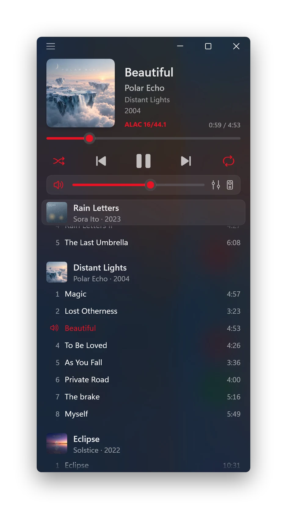

Guides › Windows
The best way to play FLAC on Windows 11
Updated November 2026
Short answer: Windows 10 and 11 play FLAC out of the box: double-click a file and Media Player opens it. For lossless albums, use a player made for local files, such as Airy for Windows: gapless, grouped by album, with the real format of each file shown, such as FLAC 24/96.
What Windows does on its own
Microsoft added FLAC to Windows 10, so Media Player and File Explorer play it without extra codecs. Media Player is built around a library, though, and it shows little about the file itself.
What to look for in a FLAC player
- Gapless playback, so live albums and mixes play without breaks.
- Your folders as they are, with no library to import or rebuild.
- The real format: bit depth and sample rate of the playing file.
- An output choice for a USB DAC or headphones, just for the player.
Play FLAC with Airy for Windows
- Install Airy from the Microsoft Store and open it.
- Drag a folder into the window, or click + (Ctrl+O). CUE sheets and M3U, PLS, XSPF and WPL playlists work too.
- Double-click a song. Albums play gapless, grouped with their covers.

Airy for Windows
A native, lossless audio player for Windows 10 and 11. Free to download, every upgrade feature free for 14 days.
Frequently asked questions
Does Windows 11 play ALAC and AIFF too?
Yes. Airy for Windows plays FLAC, ALAC, WAV, AIFF, MP3, AAC and WMA with Windows' own decoders. OGG and Opus play with Microsoft's free Web Media Extensions.
Why is a song greyed out?
Its format is one Windows can't play, such as APE, WavPack or DSD, or its drive isn't connected. The song stays in the list, so nothing goes missing.